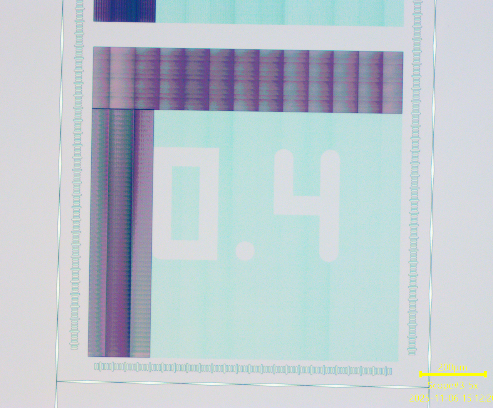
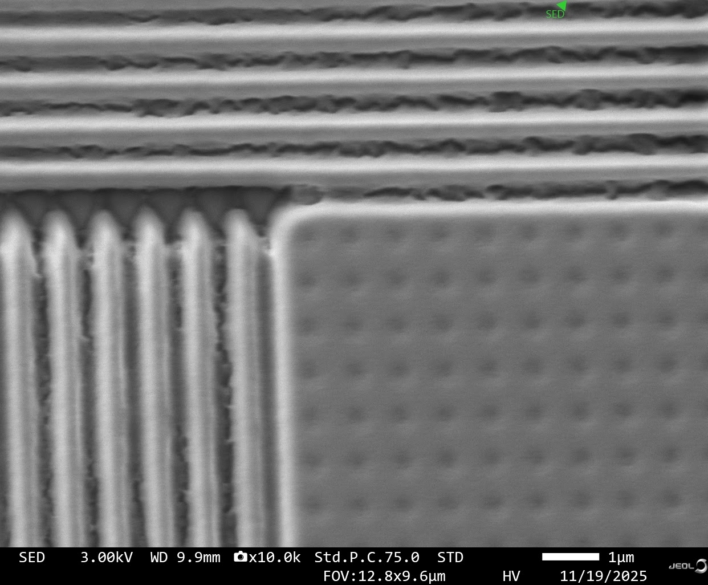
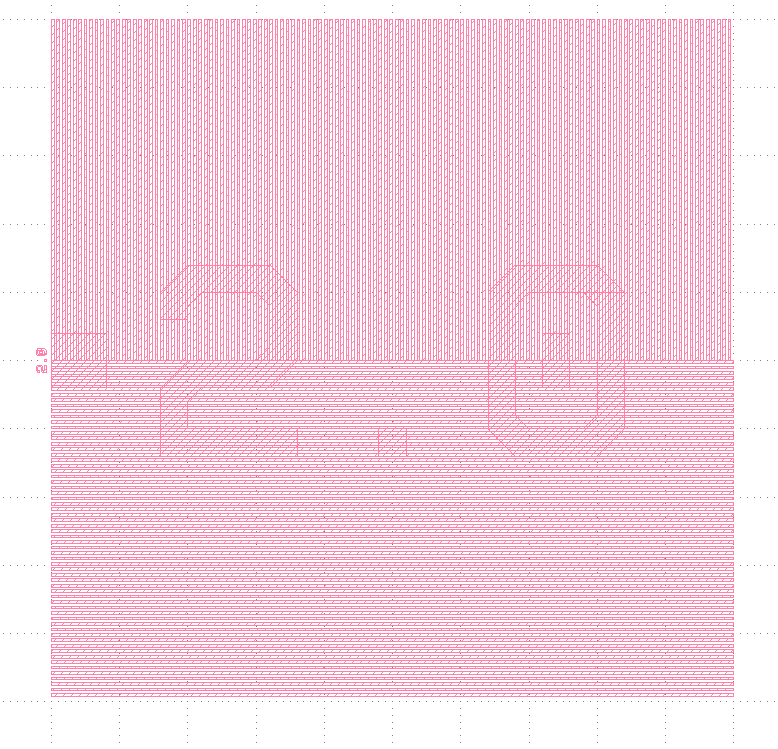
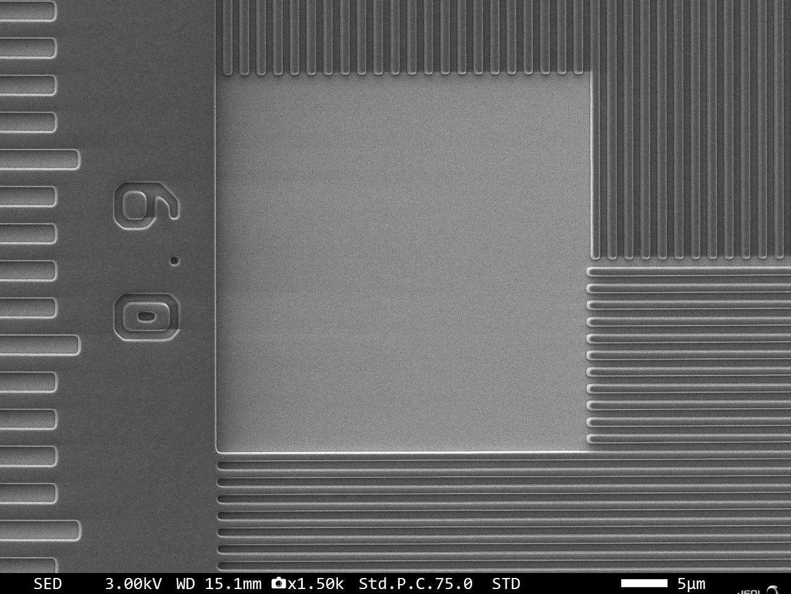
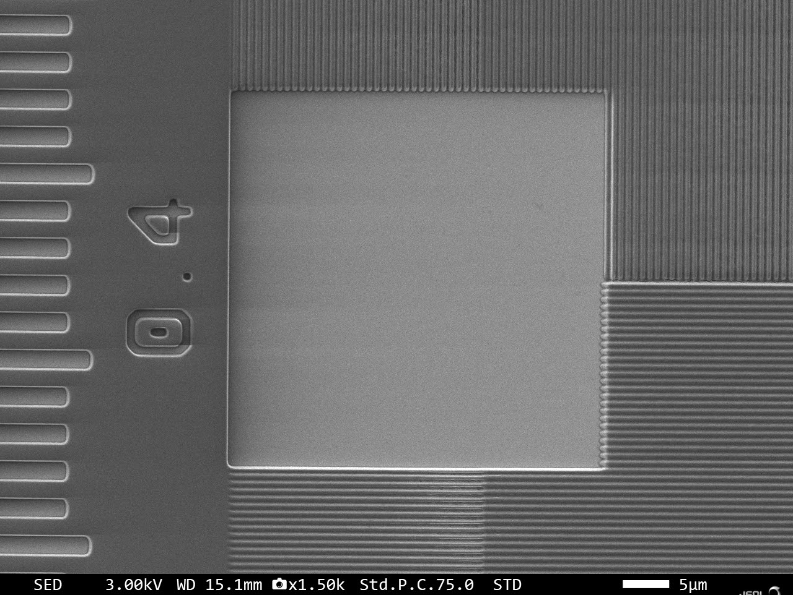
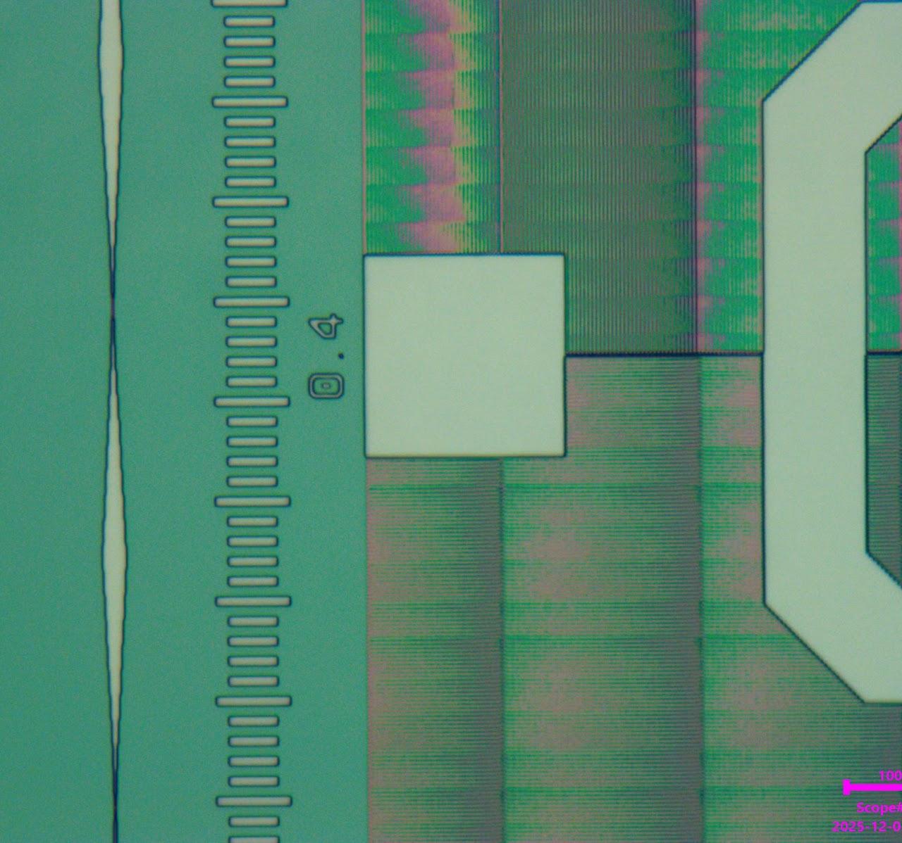

Problem
The old MLA calibration pattern was hard to read at small feature sizes. Stitching artifacts and photoresist buildup made calibration unreliable.

Method
- Used SEM to confirm photoresist residue between the bars as the root cause.
- Wrote Python scripts in KLayout to generate a new modular bar pattern built for SEM evaluation.


Result / Next Steps
- Designed the new pattern to avoid photoresist buildup and standardize calibration without subjective judgment calls.
- Feature spacing can be changed instantly in the script, with no rebuild.
- Wrote a traveler to guide new interns through the calibration.


